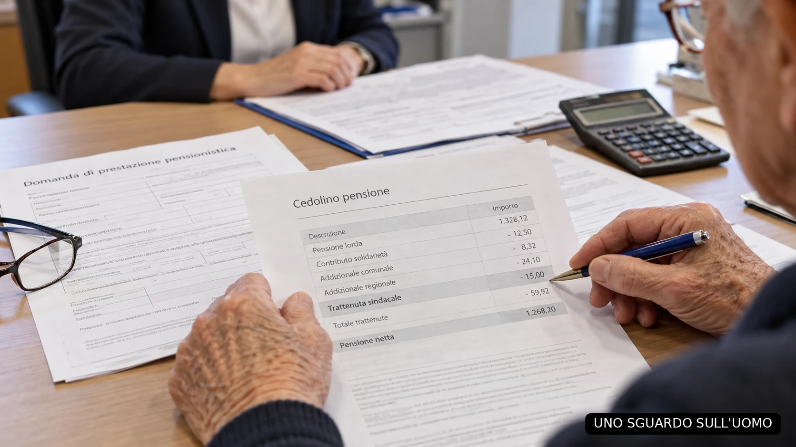

In Italia più di 5,7 milioni di persone vivono in povertà assoluta. Sono oltre 2,2 milioni di famiglie. Non sono cifre con cui confezionare una notizia di passaggio: sono persone che, secondo la misurazione dell’Istituto nazionale di statistica (ISTAT) riferita al 2024, non dispongono di quanto serve per sostenere una spesa essenziale adeguata alle proprie condizioni. Chi non riesce ad acquistare ciò di cui ha bisogno non può rimandare per sempre: rinuncia, si indebita, cerca aiuto.
In questo dossier
- Cinque milioni e settecentomila persone. E qualcuno deve aiutarle
- La povertà assoluta non significa semplicemente avere la pensione bassa
- Gli anziani: novecentodiciottomila poveri assoluti
- Caritas incontra e accompagna le persone
- Banco Alimentare rifornisce gli enti che distribuiscono il cibo
- Quelli che non entrano nei registri: i genitori, i nonni, i familiari
- Il denaro che non basta: fare la spesa o pagare tutto?
- Gli assegni sotto i 750 euro e il confine dei numeri
- C’è chi riceve ancora meno: l’assegno sociale
- Poi abbiamo trovato mezzo miliardo: la trattenuta sindacale sulle pensioni
- La delega: una firma che continua per anni
- Quanto costa al pensionato, dalle pensioni basse a quelle alte
- Consenso consapevole o firma fra tanti moduli?
- Ma i sindacati dei pensionati che cosa fanno?
- Primo esperimento: distribuire il flusso sulle pensioni sotto i 750 euro
- Secondo esperimento: quasi un milione di assegni sociali
- La quattordicesima sociale: una proposta, non una legge in vigore
- Chi dovrebbe amministrare il fondo? INPS, Poste, CDP e la liquidità
- Cambiare la destinazione significa cambiare la legge
- E se quei 515 milioni andassero alla sanità?
- Conclusione: il vero protagonista non è il sindacato
- Fonti
Cinque milioni e settecentomila persone. E qualcuno deve aiutarle
Il punto di partenza di questa inchiesta è una domanda elementare: come vivono quelle persone? Chi mette sul tavolo il cibo quando il reddito non basta? Chi paga le scarpe del bambino, una bolletta in scadenza, le medicine, una spesa che non può più essere rinviata? E soprattutto: che cosa succede al bilancio di chi aiuta?
La povertà italiana non coincide con un unico volto. Può riguardare una famiglia numerosa, un lavoratore con un salario insufficiente, un disoccupato, un anziano solo, una coppia che paga l’affitto. Non basta sapere quanti soldi entrano in una casa: bisogna conoscere quanti ne devono uscire e per quali necessità. Lo dimostra il metodo stesso usato dall’ISTAT, che definisce soglie differenti in base alla composizione della famiglia, al territorio e ai prezzi dei beni essenziali.
La cifra nazionale descrive un fenomeno enorme. Ma non racconta ancora il sistema quotidiano di sacrifici, rinunce e piccoli trasferimenti di denaro che consente a una parte del Paese di non precipitare del tutto. È lì che comincia il nostro ragionamento.
La povertà assoluta non significa semplicemente avere la pensione bassa
Occorre sgomberare un equivoco. Una persona con 620 euro di pensione al mese non è automaticamente classificata dall’ISTAT tra i poveri assoluti. Chi possiede una casa già pagata, non sostiene un affitto e vive in un territorio dove alcune spese sono inferiori può avere una soglia statistica diversa da quella di una famiglia con quattro componenti che deve pagare casa, trasporti e alimenti. Due redditi identici non danno necessariamente due condizioni di vita identiche.
Anche un anziano che coltiva un orto, riceve sostegno familiare o vive in una piccola abitazione di proprietà può apparire meno vulnerabile nelle misurazioni della spesa di un altro che paga un affitto elevato. Ma la statistica non misura il sollievo di poter comprare un regalo senza rinunciare alla spesa. E non fotografa interamente la paura di una spesa imprevista, di un elettrodomestico rotto, di un problema di salute.
Per questo non mescoliamo definizioni e cifre: i 5,7 milioni sono le persone in povertà assoluta secondo l’ISTAT, non tutti quelli che percepiscono meno di 750 euro al mese. Le pensioni sotto i 750 euro sono un’altra categoria statistica, costruita su prestazioni previdenziali. I due insiemi possono intersecarsi, ma non vanno sovrapposti automaticamente.
La precisione dei numeri, qui, non attenua la denuncia. La rende più netta: esiste la povertà misurata, e poi esiste una fascia più ampia di persone economicamente fragili per le quali anche una spesa modesta può rompere un equilibrio precarissimo.
Gli anziani: novecentodiciottomila poveri assoluti
Tra le persone in povertà assoluta, secondo i dati ISTAT 2024, figurano circa 918 mila individui di almeno 65 anni: una quota pari a circa il 6,4 per cento della popolazione anziana. Non sono tutti i pensionati con un assegno basso e non sono tutti gli anziani assistiti da associazioni caritative. Sono persone che rientrano nella definizione statistica della povertà assoluta.
Una volta arrivati alla vecchiaia, la possibilità di ricostruire il proprio reddito attraverso una nuova carriera lavorativa è limitata. Le spese per la salute possono aumentare, il potere d’acquisto può ridursi, l’aiuto che un tempo proveniva dai familiari può invertirsi: non è più il figlio a sostenere il genitore, ma il genitore pensionato a dover sostenere il figlio adulto.
La parola «pensionato» evoca talvolta la sicurezza di un’entrata mensile. Ma un reddito regolare non equivale a un reddito sufficiente. Se ogni mese si è costretti a decidere che cosa lasciare indietro, il fatto che i soldi arrivino puntualmente non elimina il problema.
Caritas incontra e accompagna le persone
Il Rapporto Caritas relativo al 2024 registra 277.775 persone accompagnate nei servizi censiti, attraverso 3.341 strutture informatizzate. Caritas incontra le persone, ne ascolta i bisogni e le accompagna attraverso centri e servizi che non si limitano all’aiuto alimentare. Il dato fotografa chi è entrato in quella rete e non rappresenta l’intera povertà italiana. Un assistito registrato può inoltre essere il riferimento di un intero nucleo familiare, con bisogni che investono più persone.
Fra gli assistiti Caritas, 39.365 hanno almeno 65 anni, circa il 14,3 per cento. Il dato dice che la povertà anziana entra sempre più spesso nei luoghi dell’aiuto. Non autorizza però un calcolo automatico degli anziani poveri in Italia: chi arriva agli sportelli Caritas non è un campione statistico rappresentativo dell’intera popolazione. Un aumento degli anziani assistiti non può essere moltiplicato sulla popolazione per inventare un nuovo conteggio nazionale.
Qui emerge una differenza essenziale: gli individui in povertà assoluta stimati dall’ISTAT sono milioni; quelli registrati in una particolare rete Caritas sono centinaia di migliaia. Non possiamo sottrarre semplicemente gli uni dagli altri e dichiarare che tutti i restanti non siano aiutati. Possiamo invece constatare che l’assistenza organizzata, per quanto preziosa, non esaurisce il fenomeno e che una parte decisiva dell’aiuto passa attraverso canali meno visibili.
Dietro un accesso alla Caritas possono esserci mesi di bollette non pagate, un lavoro perso, un affitto divenuto insostenibile, un anziano che sceglie di chiedere un pacco alimentare dopo aver cercato a lungo di cavarsela da solo. L’assistenza non è la causa della povertà: è il tentativo di contenere una frattura economica che si è già prodotta.
Banco Alimentare rifornisce gli enti che distribuiscono il cibo
La Fondazione Banco Alimentare opera su un livello diverso. Recupera le eccedenze e distribuisce gli alimenti agli enti territoriali convenzionati, che a loro volta li consegnano alle persone e alle famiglie. Il dato di riferimento del 2023 parla di circa 1.794.000 persone raggiunte attraverso questi enti. Non sono persone che si presentano direttamente ai magazzini del Banco e non costituiscono automaticamente una popolazione separata da quella incontrata da Caritas.
Fra gli enti riforniti possono comparire strutture Caritas, associazioni di volontariato, realtà parrocchiali, Croce Rossa e altre organizzazioni assistenziali. Banco Alimentare descrive quindi una filiera di approvvigionamento; Caritas descrive una rete che incontra e accompagna le persone. Le due funzioni possono incrociarsi e gli stessi nuclei possono ricevere più forme di assistenza. Sarebbe perciò sbagliato sommare 1,794 milioni ai 277.775 registrati dalla Caritas e presentarli come un totale nazionale privo di sovrapposizioni.
Nella nostra discussione abbiamo eseguito un confronto elementare: 5.700.000 meno 1.794.000 fa circa 3.906.000. Il risultato aritmetico è corretto, ma non misura le persone rimaste senza aiuto. Il primo dato è una stima della povertà assoluta; il secondo conta persone raggiunte tramite enti convenzionati, fra i quali possono esserci anche strutture Caritas. Le rilevazioni riguardano anni e universi differenti. Alcune persone ricevono inoltre sostegno da servizi pubblici, altre associazioni, reti di vicinato o familiari.
Ma l’esperimento mentale rivela una questione concreta. Non basta contare le persone raggiunte da un grande circuito nazionale per sapere quante siano ancora in difficoltà. E non basta contare i pacchi consegnati per capire chi ha pagato, con il proprio reddito, quello che il pacco non contiene: le utenze, i trasporti, l’affitto, i libri scolastici, i medicinali.
Le reti caritative sono parte della risposta. Non possono essere scambiate per una soluzione economica strutturale al problema di milioni di persone.
Quelli che non entrano nei registri: i genitori, i nonni, i familiari
È qui che l’indagine cambia profondità. Il povero che riceve un pacco alimentare viene contato, almeno nella rete che lo assiste. Il genitore anziano che rinuncia a una parte della propria pensione per comprare la spesa al figlio disoccupato può non comparire in nessuna statistica della beneficenza. Il nonno che paga le scarpe del nipote, la nonna che prepara il pranzo per figli e nipoti, la madre che salda una bolletta con parte dell’assegno minimo esercitano una solidarietà invisibile.
Facciamo un esempio. Una pensionata riceve circa 620 euro. Ha un’abitazione di proprietà e per questa ragione non compare necessariamente fra i poveri assoluti. Ogni mese versa però 70 o 100 euro al figlio che non riesce a pagare tutto, oppure compra viveri per la sua famiglia. La spesa compare nella vita quotidiana, non in un registro nazionale dei trasferimenti familiari. Il reddito formale della pensionata non cambia; la sua disponibilità reale sì.
Questo trasferimento può avere un valore materiale e morale enorme. Consente a una famiglia di mangiare meglio, di pagare una quota di affitto, di non lasciare un bambino senza scarpe. Ma impone un sacrificio al donatore. Non è necessario che il parente si trasformi ufficialmente in povero assoluto perché la solidarietà gli costi una rinuncia.
Il fenomeno non riguarda esclusivamente i rapporti nonni-nipoti. Un anziano può aiutare un figlio quarantenne o cinquantenne che ha perso il lavoro; un pensionato con un reddito discreto può mantenere una madre con assegno sociale; due famiglie possono condividere spese di alimentazione e utenze; fratelli e sorelle possono alternarsi nell’assistenza a un familiare. Il denaro può circolare verso il basso, verso l’alto e lateralmente, lungo i legami di parentela.
Per questo la questione dei regali emersa durante il nostro ragionamento non è un dettaglio sentimentale. Un nonno che riesce a fare tre piccoli regali di compleanno anziché uno non ha sconfitto la povertà, ma ha riconquistato un margine di libertà familiare. Le persone non vivono soltanto per pagare bollette: hanno relazioni, dignità, ricorrenze, responsabilità reciproche.
La povertà può dunque propagarsi nelle famiglie attraverso il dovere morale di aiutare chi è in difficoltà. Questa è una deduzione sul funzionamento dei bilanci familiari, non un nuovo indicatore ISTAT e non una quantificazione ufficiale. Proprio perché la distinguiamo dal dato statistico, possiamo svilupparla senza inventare numeri.
Il denaro che non basta: fare la spesa o pagare tutto?
Chi vive con redditi precari non divide il mese in categorie ordinate. Deve scegliere: pagare integralmente la luce o comprare alimenti migliori? Comprare subito i farmaci o rimandare una visita? Usare l’automobile per cercare lavoro o risparmiare carburante? Acquistare scarpe nuove al bambino o prolungare la vita di quelle consumate?
Anche quando arriva un aiuto alimentare, rimangono tutte le spese che il cibo distribuito non copre. E anche quando un pensionato ha il tetto garantito dalla casa di proprietà, restano i costi di condominio, riscaldamento, salute e manutenzione. La distinzione fra fame, povertà assoluta, vulnerabilità e rinuncia aiuta a capire che non stiamo descrivendo un unico problema facile da risolvere.
Non c’è bisogno di idealizzare la solidarietà familiare. A volte aiuta, a volte è insufficiente, a volte non esiste. E soprattutto non è giusto considerarla un ammortizzatore sociale inesauribile. Se lo Stato non riesce a intervenire, la spesa spesso finisce sulle persone che hanno meno margine per sostenerla.
Gli assegni sotto i 750 euro e il confine dei numeri
L’Osservatorio statistico dell’Istituto nazionale della previdenza sociale (INPS) sulle pensioni vigenti al 1° gennaio 2026 indica 2.822.563 prestazioni di vecchiaia inferiori a 750 euro mensili. Fra esse figurano numerose pensioni integrate e prestazioni di importo molto ridotto. Il dato, lo ripetiamo, riguarda gli assegni, non altrettanti pensionati che vivono esclusivamente con quella somma. Una persona può ricevere più trattamenti, una pensione ai superstiti oppure un reddito ulteriore.
Il fatto che il reddito complessivo possa essere maggiore non cancella la portata economica del numero: quasi tre milioni di assegni previdenziali di vecchiaia sono sotto i 750 euro. E il peso ricade soprattutto sulle donne: nel conteggio INPS 1.909.000 prestazioni di questa classe risultano femminili, contro 913.563 maschili.
Abbiamo considerato anche i dati sulle pensioni di ogni tipologia sotto i 750 euro. Qui occorre una cautela ulteriore: non si possono sommare assegni di categorie differenti per inventare milioni di persone nuove né sommare gruppi di pensionati già inclusi gli uni negli altri. Non faremo dire ai dati ciò che non dicono.
Ciò che ci interessa è che gli assegni minimi o bassissimi sono diffusi e che una parte dei loro destinatari sostiene anche obblighi e aiuti familiari. Per loro una trattenuta di poche decine di euro all’anno può avere un valore reale ben diverso dal suo importo contabile.
C’è chi riceve ancora meno: l’assegno sociale
Nel 2026 il trattamento minimo previdenziale è vicino ai 620 euro mensili, mentre l’assegno sociale si colloca intorno ai 546 euro. Sono misure diverse: il primo presuppone una pensione contributiva che, nei casi previsti, viene integrata al minimo; il secondo è una prestazione assistenziale riconosciuta a determinate condizioni di età, residenza e reddito, anche in assenza di contributi sufficienti.
Nel conteggio INPS al 1° gennaio 2026 figurano 914.621 prestazioni fra pensioni sociali del vecchio ordinamento e assegni sociali. È una platea di prestazioni vicina al milione, non automaticamente un milione di nuclei familiari distinti. Il dato ci ha costretto a un’altra domanda: se cerchiamo i destinatari più fragili di un sostegno, perché fermarci alle pensioni previdenziali minime e non considerare chi percepisce soltanto l’assegno sociale?
La quattordicesima previdenziale non va confusa con una quattordicesima mensilità identica alla pensione. Spetta, a precise condizioni di età, reddito e contribuzione, ai titolari di pensioni previdenziali: per esempio una pensione da circa 620 euro può dare diritto a un importo aggiuntivo graduato in base agli anni di contributi; il solo assegno sociale non dà diritto alla stessa prestazione.
Per chi percepisce il solo assegno sociale, dunque, l’assenza di una quattordicesima previdenziale è un fatto centrale. Non significa che ogni titolare dell’assegno sociale abbia identica situazione economica o viva sempre soltanto di quello: la valutazione concreta dipende dal nucleo e dalle regole di reddito. Ma è indubbio che stiamo parlando di una prestazione ideata per persone con risorse molto limitate.
Non vogliamo organizzare una gara della miseria tra 620 e 546 euro. Vogliamo mostrare quanto sia ridotto il margine economico di partenza e quanto conti anche una mensilità aggiuntiva.
È da qui che nasce la domanda successiva: esistono flussi di denaro ricorrenti, già prelevati dai redditi pensionistici, ai quali il Paese potrebbe attribuire una destinazione sociale diversa?
Poi abbiamo trovato mezzo miliardo: la trattenuta sindacale sulle pensioni
Nel rendiconto di cassa dell’INPS relativo all’anno 2025 compare un importo preciso: 514,59 milioni di euro di versamenti alle organizzazioni sindacali a titolo di quote associative trattenute sulle pensioni. La cifra da comunicare, arrotondando, è 515 milioni di euro nel 2025. Non quasi 520, non un ipotetico totale di stipendi e pensioni: 515 milioni provenienti dalle pensioni e destinati alle organizzazioni sindacali.
Nel 2024 la voce corrispondente era pari a 516,61 milioni. Il confronto è utile anche perché smentisce le scorciatoie: pur potendo cambiare il numero di pensionati, le deleghe e gli importi, non basta ipotizzare più iscritti per concludere che il gettito sia cresciuto. Fra 2024 e 2025 è diminuito di circa 2 milioni, pur restando oltre mezzo miliardo.
Che cosa rappresenta mezzo miliardo? È una cifra che può finanziare servizi sanitari, interventi sociali, aiuti contro la povertà o, nella proposta che svilupperemo, una forma di quattordicesima sociale per una fascia di anziani a bassissimo reddito. Non sono risorse già a disposizione dello Stato: oggi appartengono alle organizzazioni sindacali secondo il sistema di deleghe vigente. Cambiarne destinazione richiederebbe una nuova legge. Ma immaginare una diversa destinazione è esattamente l’oggetto di questa proposta editoriale.
Questa scoperta non trasforma automaticamente i sindacati in responsabili della povertà. Sposta invece il fuoco su una domanda di priorità: è socialmente preferibile che la trattenuta continui a finanziare la rappresentanza associativa oppure potrebbe essere ripensata, con una riforma, come strumento di solidarietà fra pensionati?

La delega: una firma che continua per anni
La trattenuta sindacale sulle pensioni ha un fondamento normativo preciso: l’articolo 23-octies del decreto-legge 267/1972, convertito dalla legge 485/1972, e le successive disposizioni e convenzioni INPS. La quota non è un’imposta dovuta da tutti i pensionati. Nasce da una delega personale con la quale si autorizza l’INPS a trattenere denaro dalla pensione e a versarlo all’organizzazione indicata.
La delega firmata dal lavoratore durante il rapporto di lavoro non si eredita automaticamente nella pensione. Serve un’autorizzazione specifica per il trattamento pensionistico. Ma quella firma può essere raccolta contestualmente alla domanda di pensionamento e può produrre effetti sin dalla prima rata. Questa possibilità ci ha portato a interrogarci sul modo in cui il pensionato viene informato.
La trattenuta è continuativa: una volta attivata, non occorre firmare nuovamente ogni anno. Si interrompe con una revoca valida o negli altri casi previsti. Non è «eterna» in senso giuridico, ma può accompagnare una persona per anni e anni se nessuno la revoca.
Il confronto con il 5 per mille rende intuitiva la differenza di funzionamento: la scelta del contribuente viene espressa nella dichiarazione annuale, mentre la delega pensionistica continua senza bisogno di una nuova firma ogni dodici mesi. Sono istituti giuridici diversi, quindi il paragone non dimostra un’irregolarità; mostra però quanto la ripetizione silenziosa di un prelievo possa allontanarsi nel tempo dal momento in cui fu autorizzato.
Quanto costa al pensionato, dalle pensioni basse a quelle alte
Le aliquote indicate nelle convenzioni INPS esaminate seguono uno schema progressivo: 0,50 per cento fino al trattamento minimo, 0,40 per cento sulla quota compresa fra il minimo e il doppio del minimo, 0,35 per cento sulla parte eccedente. Il calcolo va riferito alle mensilità previste, compresa la tredicesima; importi e applicazione effettiva devono sempre essere verificati sulla delega e sul cedolino del singolo.
Con un minimo di riferimento arrotondato a circa 612 euro, una pensione lorda di circa 620 euro può produrre una quota sindacale intorno ai 40 euro l’anno. Una pensione da 2.000 euro produce, nello stesso schema, circa 107 euro annui; una da 5.000 euro circa 243 euro. Gli esempi servono a rendere visibile il criterio progressivo, non sono un tariffario unico di ogni organizzazione.
Per chi percepisce 620 euro, 40 euro possono essere una spesa alimentare, un regalo per il nipote, la quota per una visita o un acquisto rimandato. Per una persona che prende 5.000 euro di pensione, circa 243 euro possono essere soldi che preferirebbe destinare alla madre che vive con la minima. Questo non significa che ogni pensionato smetterebbe di sostenere un sindacato: significa che esiste un costo reale che il pensionato sostiene e al quale si può attribuire, per legge, un’altra destinazione.
Le pensioni e gli assegni sociali, invece, sono esclusi dalle convenzioni di trattenuta sindacale considerate. Una pensione previdenziale integrata al minimo non diventa per questo una pensione sociale e può essere assoggettata alla quota, se il titolare ha firmato una delega valida.
Consenso consapevole o firma fra tanti moduli?
La domanda più scomoda riguarda il momento dell’adesione. Una persona va al patronato per avviare la pensione. Le vengono presentati documenti relativi alla pratica. Fra questi può essere proposto un modulo di delega sindacale. Lo riconosce per quello che è? Le viene spiegato che sta autorizzando un prelievo periodico destinato a un’organizzazione sindacale e non un passaggio amministrativo obbligatorio?
Non abbiamo prove per dire che tutte le deleghe siano raccolte con inganno. Né il fatto che un pensionato oggi non ricordi la firma dimostra da solo che fosse stato raggirato. Ma proprio la distanza fra il momento della sottoscrizione e gli anni di trattenuta rende il consenso consapevole un tema giornalistico meritevole di verifica.
Si potrebbe misurare il livello di consapevolezza intervistando persone con trattenuta attiva e chiedendo se conoscono la sua esistenza, se ricordano quando hanno firmato, se sanno di poter revocare la delega. L’eventuale ignoranza di una parte degli intervistati non basterebbe, da sola, a dimostrare una frode nelle procedure; porrebbe però una seria questione di trasparenza e informazione.
Per questo il nostro consiglio al lettore è diretto: «Se non ricordi di aver firmato consapevolmente una delega che autorizza l’INPS a trattenere ogni mese una quota della tua pensione per versarla a un sindacato, poniti una domanda: quando hai presentato la domanda di pensionamento, ti è stato chiesto di firmare documenti senza spiegarti chiaramente a cosa servissero? Potresti aver sottoscritto una delega sindacale credendo che fosse semplicemente uno dei documenti necessari per ottenere la pensione».
La verifica è semplice nel principio: controllare il cedolino, cercare la voce della trattenuta sindacale e, se non si vuole più continuare, esercitare la revoca direttamente attraverso l’INPS, senza dover ottenere il permesso del sindacato. Non è un invito a revocare ogni iscrizione; è un invito a sapere che cosa si paga e a decidere consapevolmente.
Ma i sindacati dei pensionati che cosa fanno?
Il contraddittorio non va cancellato perché disturba il titolo. I sindacati dei pensionati svolgono attività di rappresentanza collettiva, pressione istituzionale, iniziative su fiscalità, sanità, non autosufficienza e potere d’acquisto. Hanno organizzato manifestazioni e partecipato a negoziati con i governi. Non possiamo scrivere che non abbiano mai fatto nulla, né che non esistano iniziative nelle piazze.
Fra i precedenti vengono citate l’introduzione della quattordicesima previdenziale nel 2007 e la sua estensione e maggiorazione dopo gli accordi del 2016, con effetti dal 2017. Questi risultati interessano milioni di pensionati che soddisfano determinati requisiti. Non riguardano però una quattordicesima generalizzata per chi riceve soltanto l’assegno sociale.
La domanda sviluppata nel nostro contraddittorio è più specifica: quante mobilitazioni di massa direttamente riconducibili ai sindacati dei pensionati, per ottenere aumenti delle pensioni minime o sociali, hanno prodotto risultati economici misurabili per quelle precise categorie? Nel 2019 ci furono manifestazioni nazionali, rivendicazioni e iniziative; è scorretto negarle. Ma la loro esistenza, da sola, non dimostra quali aumenti monetari siano stati determinati dalla pressione di piazza per chi prende il minimo o l’assegno sociale.
Non confondiamo inoltre l’attività associativa con i servizi di patronato e con quelli dei centri di assistenza fiscale (CAF). Il patronato svolge funzioni previste e finanziate anche da meccanismi pubblici: una parte dell’assistenza previdenziale istituzionale è accessibile anche ai non iscritti. Alcune prestazioni dei CAF possono essere a pagamento, anche per gli iscritti, altre gratuite secondo condizioni e convenzioni. Non sarebbe corretto dire che tutti i servizi siano sempre pagati a parte; sarebbe altrettanto scorretto sostenere che una tessera sindacale sia indispensabile per presentare domanda di pensione.
Se i sindacati ricevono annualmente oltre 515 milioni di euro attraverso trattenute pensionistiche, la domanda pubblica legittima è quali benefici concreti e verificabili derivino da quel finanziamento: quali servizi inclusi nella quota, quali risultati specifici per le pensioni più basse, quali costi e quali risultati di rappresentanza collettiva. Non basta un comunicato stampa. E non basta neppure il nostro giudizio: la risposta dovrebbe essere documentabile.
Primo esperimento: distribuire il flusso sulle pensioni sotto i 750 euro
Il nostro primo calcolo ha preso 515 milioni di euro, la cifra arrotondata delle trattenute 2025, e l’ha confrontata con 2.822.563 prestazioni di vecchiaia sotto i 750 euro censite all’inizio del 2026. La divisione dà circa 182,46 euro annui per prestazione. Il numero non descrive un rimborso individuale esistente: è una simulazione di redistribuzione della stessa massa economica a una platea teorica scelta per importo della prestazione.
Nel ragionamento iniziale è entrata anche la trattenuta del pensionato minimo: circa 40 euro l’anno. Se un beneficiario ricevesse 182,46 euro e fosse chiamato a contribuire per circa 40 euro nell’ambito del nuovo sistema, il beneficio netto sarebbe di circa 142,46 euro. Non significa che oggi ogni pensionato riceva 182 euro o che gli vengano sottratti 142 euro; sono ipotesi di meccanismo, utili a mostrare quanto possa cambiare la destinazione del denaro.
È nato così l’esempio dei regali: anziché un piccolo dono a un solo nipote, quel margine potrebbe consentire qualche attenzione in più ai familiari. Nella vita vera nessuna famiglia ha un bilancio esattamente uguale all’altra. Il valore del calcolo non è promettere tre regali, ma rendere concreta una somma che a livello nazionale sembra astratta.
Da qui abbiamo ampliato il ragionamento anche in senso opposto: un pensionato da 5.000 euro, che oggi versa una quota associativa più elevata, potrebbe preferire che quella contribuzione diventasse solidarietà per persone anziane molto più povere, magari sua madre. Il punto non è cancellare la contribuzione: è destinare la raccolta a un’altra utilità sociale.
Secondo esperimento: quasi un milione di assegni sociali
Poi ci siamo chiesti se vi fosse una fascia ancora più fragile delle pensioni sotto i 750 euro. La risposta è stata l’assegno sociale. Le 914.621 prestazioni di pensione e assegno sociale censite dall’INPS costituiscono una platea teorica di dimensioni prossime al milione. Applicando a essa i 515 milioni del 2025, il rapporto aritmetico è circa 563 euro per prestazione all’anno. Se per illustrare l’ordine di grandezza si usano 520 milioni arrotondati, il risultato è circa 568,54 euro. Per il dossier utilizziamo il dato più preciso del 2025: 515 milioni e circa 563 euro.
Per chi percepisce un assegno sociale intorno ai 546 euro, una somma annua aggiuntiva attorno a 563 euro equivarrebbe a circa un’altra mensilità dell’ordine di grandezza di quella abituale. Non è una cura definitiva alla povertà. Può però permettere il pagamento di una bolletta, di cure, di alimenti, di una spesa familiare altrimenti rinviata.
Questa seconda simulazione modifica anche la logica morale della proposta. Non ripartiamo necessariamente il denaro fra coloro che oggi subiscono le trattenute; individuiamo i destinatari sulla base di una condizione economica più fragile. Chi riceve soltanto l’assegno sociale attualmente non versa la quota sindacale su quella prestazione, ma potrebbe diventare beneficiario del nuovo fondo.
In un sistema del genere, il contributo di solidarietà avrebbe una logica redistributiva: i pensionati che versano somme diverse in relazione al proprio assegno contribuirebbero a sostenere chi non riesce a raggiungere una soglia sufficiente. Non sarebbe uno scambio individuale fra la tessera e un rimborso, ma una scelta collettiva da definire attraverso la legge.
Non stiamo dicendo che 563 euro cambierebbero una vita da soli. Stiamo dicendo che, prima di considerare irrilevante mezzo miliardo perché troppo poco per risolvere la povertà, è doveroso immaginare come possa funzionare per chi ha meno di 550 euro al mese.
La quattordicesima sociale: una proposta, non una legge in vigore
Una prima ipotesi avrebbe previsto circa 43 euro al mese distribuiti su dodici mesi, oppure circa 43 euro su tredici quote nell’arco dell’anno a seconda della struttura scelta. Il ragionamento ha condotto a un’idea più semplice da raccontare: un pagamento aggiuntivo una volta all’anno, una quattordicesima sociale destinata alla fascia degli assegni sociali.
Il costo teorico è dato dai 515 milioni raccolti e dalla platea considerata; cambiare frequenza dei pagamenti non abbatte da solo la spesa annuale. Può invece rendere più prevedibile l’amministrazione del fondo: l’INPS raccoglie flussi mensili e può programmare un’erogazione annuale. La platea reale, i requisiti, la gestione e le eventuali variazioni delle deleghe dovrebbero essere disciplinati da una legge, ma questa inchiesta non pretende di sostituirsi a una relazione tecnica governativa.
Il nostro confronto con altre scelte di spesa pubblica nasce da una domanda di priorità. Se lo Stato riesce a trovare risorse per aumenti retributivi, rinnovi contrattuali e diverse categorie professionali, è legittimo chiedere perché non si debba discutere anche di qualche decina di euro al mese o di una mensilità aggiuntiva per chi vive con un assegno sociale. Non attribuiamo qui cifre specifiche ai contratti di categorie professionali senza una verifica documentale: il problema politico di fondo resta comprensibile anche senza quel confronto numerico.
La quattordicesima sociale, in questa forma, è una proposta editoriale. I pensionati oggi non hanno diritto a riceverla da questo fondo. Ma l’assenza di un diritto vigente non rende inutile l’ipotesi: rende necessario discuterne come possibile scelta futura.
Chi dovrebbe amministrare il fondo? INPS, Poste, CDP e la liquidità
Durante l’indagine abbiamo esplorato la gestione del denaro. I contributi entrerebbero in modo distribuito nell’arco dell’anno, mediamente per oltre 42 milioni al mese se il flusso annuale restasse vicino ai 515 milioni. Ci siamo chiesti se la liquidità potesse generare rendimento prima del pagamento annuale della prestazione.
Sono state considerate ipotesi di investimento in Buoni ordinari del Tesoro (BOT), un fondo presso l’INPS e un possibile coinvolgimento di Cassa depositi e prestiti (CDP). La distinzione è importante: l’INPS eroga le pensioni, Poste Italiane è uno degli intermediari attraverso cui i pensionati ricevono i pagamenti e CDP gestisce attività finanziarie legate anche al risparmio postale. Non si può dire che tutto il flusso pensionistico italiano sia gestito da Poste, né che i tre soggetti siano la stessa cassa.
Inoltre, un fondo pubblico che acquistasse titoli di Stato otterrebbe interessi contabilizzati in capo al fondo, ma quei pagamenti rappresenterebbero nello stesso tempo un costo per l’emittente pubblico; non si crea automaticamente ricchezza netta per lo Stato facendolo indebitare con un altro soggetto del perimetro pubblico. CDP potrebbe teoricamente assumere un ruolo amministrativo o finanziario se previsto dalle norme applicabili, senza che ciò implichi rendimenti gratuiti.
La proposta non dipende dalla promessa di guadagni finanziari. Dipende da un flusso già ricorrente di circa 515 milioni all’anno e da una nuova destinazione stabilita per legge. La discussione su BOT, CDP, Poste e INPS mostra che esistono modi diversi di custodire e programmare il pagamento; non costituisce una garanzia di rendimento o una soluzione legale già pronta.
Cambiare la destinazione significa cambiare la legge
La quota sindacale attuale è un pagamento volontario e privato disposto mediante delega. Non è denaro pubblico libero da riallocare con una circolare. La sua destinazione non potrebbe essere semplicemente cambiata da un funzionario, perché il pensionato ha autorizzato una specifica organizzazione a riceverlo.
La nostra ipotesi prevede pertanto una riforma legislativa: superare o modificare il sistema che consente il versamento continuativo delle quote sindacali attraverso le pensioni e istituire un contributo di solidarietà distinto, con propria disciplina, propri criteri e destinazione a prestazioni sociali. Eventuali adesioni volontarie e un prelievo obbligatorio avrebbero implicazioni giuridiche differenti; la scelta dovrebbe essere fatta esplicitamente dal legislatore nel rispetto dei diritti costituzionali.
Non intendiamo consegnare al governo una copertura finanziaria certificata. Il dossier mette in discussione una priorità e mostra un ordine di grandezza a partire da dati ufficiali. Le simulazioni sono dichiarate come tali e non vanno spacciate per un diritto esistente o per un progetto legislativo già validato.
Il titolo «La povertà contagiosa» descrive un meccanismo economico e familiare, non attribuisce una colpa alle persone povere. Quando il reddito non basta, il costo si sposta su figli, genitori, fratelli e nonni; il flusso delle trattenute sindacali è una delle risorse sulle quali il dossier interroga le priorità collettive.
E se quei 515 milioni andassero alla sanità?
Nel confronto è emersa anche un’altra possibile destinazione: la sanità pubblica. Mezzo miliardo all’anno può essere confrontato con risorse per cure, personale, diagnostica, prevenzione, servizi agli anziani e riduzione delle liste d’attesa. Non quantifichiamo qui quanti medici o esami sarebbero finanziabili, perché dipenderebbe dai costi e dai programmi concretamente scelti.
L’obiettivo di questo passaggio non è moltiplicare promesse. È mettere a fuoco che l’ordine di grandezza economico ha conseguenze sociali potenzialmente rilevanti. Se il denaro fosse ridestinato alla sanità, non finanzierebbe contemporaneamente anche la quattordicesima sociale: si tratta di destinazioni alternative che rendono evidente la necessità di una scelta.
La proposta centrale del dossier rimane quella costruita sul percorso della povertà anziana e dell’assegno sociale. L’ipotesi sanitaria mostra soltanto che la questione è più ampia di una disputa fra sindacati e pensionati: riguarda le priorità di una comunità.
Conclusione: il vero protagonista non è il sindacato
Abbiamo iniziato con 5,7 milioni di persone in povertà assoluta e oltre due milioni di famiglie alle prese con la mancanza di risorse. Siamo passati per i servizi Caritas, la rete del Banco Alimentare, i limiti dei conteggi e il lavoro silenzioso di genitori, nonni, fratelli e figli che tengono in piedi interi nuclei familiari anche quando hanno poco per sé.
Abbiamo incontrato le pensioni da meno di 750 euro, gli anziani poveri assoluti, gli assegni sociali attorno ai 546 euro. E soltanto allora abbiamo esaminato un flusso di denaro che, nel 2025, ha trasferito alle organizzazioni sindacali circa 515 milioni di euro dalle pensioni.
Non neghiamo la libertà di associazione e non cancelliamo le attività svolte dai sindacati. Ma non rinunciamo alla domanda essenziale: davanti a una povertà così estesa, quale funzione sociale alternativa potrebbero avere risorse di questa dimensione? Se il contributo restasse e cambiasse destinatario, potremmo immaginare quasi una mensilità aggiuntiva per circa 915 mila prestazioni sociali. È una simulazione, non una promessa. Ed è proprio questa possibilità a imporre una discussione.
La povertà diventa contagiosa quando il bisogno di una persona si trasferisce su chi le sta accanto. Il soggetto di questa inchiesta è l’uomo: quello che chiede aiuto, quello che lo offre a costo di privarsi del necessario e quello che, arrivato alla vecchiaia, avrebbe diritto almeno a non dover scegliere ogni giorno che cosa sacrificare.
FONTI
- ISTAT — Le statistiche sulla povertà, dati relativi all’anno 2024: oltre 5,7 milioni di persone e oltre 2,2 milioni di famiglie in povertà assoluta; povertà delle persone con almeno 65 anni.
- Caritas Italiana — Rapporto sulla povertà e l’esclusione sociale, dati 2024: 277.775 persone incontrate nei servizi censiti, 3.341 strutture informatizzate, 39.365 assistiti di almeno 65 anni.
- Fondazione Banco Alimentare — Report e comunicazioni istituzionali 2023: circa 1.794.000 persone raggiunte attraverso gli enti della rete; ruolo di recupero e distribuzione tramite organizzazioni convenzionate.
- INPS — Osservatorio statistico «Pensioni vigenti all’1.1.2026 e liquidate nel 2025»: trattamenti sotto 750 euro, pensioni e assegni sociali e ripartizioni per genere.
- INPS — Consiglio di amministrazione, deliberazione n. 27 dell’11 marzo 2026, «Gestione di cassa 2025», voce dei versamenti alle organizzazioni sindacali per quote associative trattenute su pensioni, pari a 514,59 milioni di euro.
- INPS — Rendiconto/gestione di cassa 2024, voce corrispondente delle trattenute pensionistiche a favore delle organizzazioni sindacali, pari a 516,61 milioni di euro.
- Decreto-legge 30 giugno 1972, n. 267, articolo 23-octies, convertito dalla legge 11 agosto 1972, n. 485 — deleghe per trattenute sindacali su pensioni.
- INPS — Circolari e convenzioni sulle trattenute sindacali pensionistiche, sulle aliquote percentuali, sul rilascio della delega e sulla revoca tramite servizi INPS.
- INPS — Informazioni istituzionali su assegno sociale, trattamento minimo e quattordicesima previdenziale; articolo 5 del decreto-legge 81/2007 e disposizioni successive.
- Legge 30 marzo 2001, n. 152 — disciplina degli istituti di patronato e assistenza sociale.
- SPI-CGIL, FNP-CISL e UILP-UIL — documentazione pubblica sulle manifestazioni dei pensionati e sugli accordi del 2007 e del 2016 relativi alla quattordicesima e ad altre rivendicazioni.